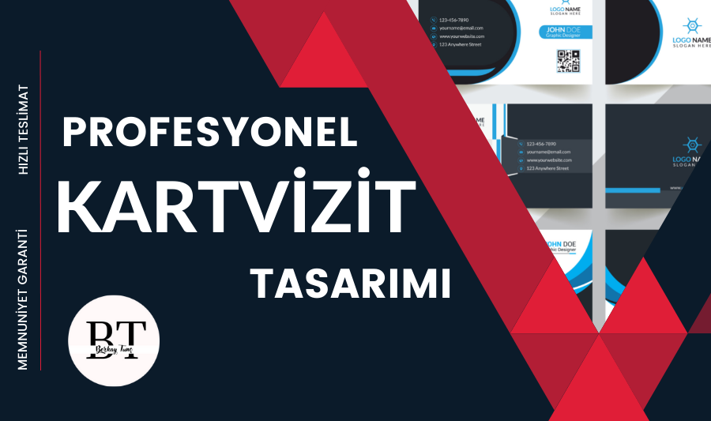

Profesyonel Kartvizit Tasarımı

Kartvizit Neden Önemlidir?
Birkaç paragraf önce değindiğim gibi kartvizit, iletişimi sürdürülebilir kılar. Herhangi bir ortamda (toplantı, event, zirve, eğitim vs.) tanışılan kişilerle kartvizit alışverişi yapılarak karşı taraf üzerinde bir iz bırakılır. Diğer bir deyişle kartvizit, karşımızdaki kişiye temas etmemizi sağlar. Bu arada kartvizit kurumsal iletişim / iş ilişkisi için önemli olduğu kadar tüketiciyle / hedef kitleyle iletişim için de önemlidir. Kartvizit sayesinde kurum ile hedef kitle arasındaki bağ ve iletişim kurulmuş olur. Kurulmakla kalmaz bağ ve iletişimin devamlı olması sağlanır.
Kartvizitte Hangi Bİlgiler Olmalı ?
Tüm bunlar ortalama bir kartvizitte olması gereken bilgilerdir. İsteğe bağlı olarak gsm numarası, faks numarası yazılmayabilir. Yine isteğe bağlı olarak kartvizite QR kod eklenebilir. Bazı kartvizitlerde sadece kurum logosu, kişinin adı – soyadı ve unvanı olduğu görülür. Güçlü sadelik önemlidir, ancak yine de kartvizitte belli başlı iletişim bilgilerinin yer almasında yarar vardır.
- Şirket logosu / adı
- Kişinin adı – soyadı
- Kişinin unvanı / pozisyonu
- Sabit ve/veya gsm numarası
- Kurumsal e-mail adresi
- Adres